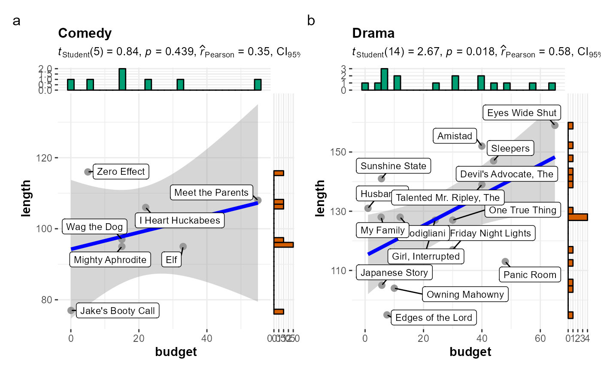

Scatterplot with marginal distributions for all levels of a grouping variable
Source:R/grouped_ggscatterstats.R
grouped_ggscatterstats.RdGrouped scatterplots from ggplot2 combined with marginal
histograms/boxplots/density plots with statistical details added as a
subtitle.
grouped_ggscatterstats(data, x, y, type = "pearson", conf.level = 0.95, bf.prior = 0.707, bf.message = TRUE, label.var = NULL, label.expression = NULL, grouping.var, title.prefix = NULL, xlab = NULL, ylab = NULL, method = "lm", method.args = list(), formula = y ~ x, point.color = "black", point.size = 3, point.alpha = 0.4, line.size = 1.5, point.width.jitter = 0, point.height.jitter = 0, line.color = "blue", marginal = TRUE, marginal.type = "histogram", marginal.size = 5, margins = c("both", "x", "y"), package = "wesanderson", palette = "Royal1", direction = 1, xfill = "#009E73", yfill = "#D55E00", xalpha = 1, yalpha = 1, xsize = 0.7, ysize = 0.7, centrality.para = NULL, results.subtitle = TRUE, stat.title = NULL, caption = NULL, subtitle = NULL, nboot = 100, beta = 0.1, k = 2, axes.range.restrict = FALSE, ggtheme = ggplot2::theme_bw(), ggstatsplot.layer = TRUE, ggplot.component = NULL, return = "plot", messages = TRUE, ...)
Arguments
| data | A dataframe (or a tibble) from which variables specified are to be taken. A matrix or tables will not be accepted. |
|---|---|
| x | The column in |
| y | The column in |
| type | Type of association between paired samples required
(" |
| conf.level | Scalar between 0 and 1. If unspecified, the defaults return
|
| bf.prior | A number between 0.5 and 2 (default |
| bf.message | Logical that decides whether to display Bayes Factor in
favor of the null hypothesis. This argument is relevant only for
parametric test (Default: |
| label.var | Variable to use for points labels. Can be entered either as
a character string (e.g., |
| label.expression | An expression evaluating to a logical vector that
determines the subset of data points to label. This argument can be entered
either as a character string (e.g., |
| grouping.var | A single grouping variable (can be entered either as a
bare name |
| title.prefix | Character string specifying the prefix text for the fixed
plot title (name of each factor level) (Default: |
| xlab | Labels for |
| ylab | Labels for |
| method | Smoothing method (function) to use, accepts either a character vector,
e.g. For If you have fewer than 1,000 observations but want to use the same |
| method.args | List of additional arguments passed on to the modelling
function defined by |
| formula | Formula to use in smoothing function, eg. |
| point.color | Aesthetics specifying geom point
(defaults: |
| point.size | Aesthetics specifying geom point
(defaults: |
| point.alpha | Aesthetics specifying geom point
(defaults: |
| line.size | Size for the regression line. |
| point.width.jitter | Degree of jitter in |
| point.height.jitter | Degree of jitter in |
| line.color | color for the regression line. |
| marginal | Decides whether |
| marginal.type | Type of marginal distribution to be plotted on the axes
( |
| marginal.size | Integer describing the relative size of the marginal
plots compared to the main plot. A size of |
| margins | Character describing along which margins to show the plots.
Any of the following arguments are accepted: |
| package | Name of package from which the palette is desired as string or symbol. |
| palette | Name of palette as string or symbol. |
| direction | Either |
| xfill | Character describing color fill for |
| yfill | Character describing color fill for |
| xalpha | Numeric deciding transparency levels for the marginal
distributions. Any numbers from |
| yalpha | Numeric deciding transparency levels for the marginal
distributions. Any numbers from |
| xsize | Size for the marginal distribution boundaries (Default:
|
| ysize | Size for the marginal distribution boundaries (Default:
|
| centrality.para | Decides which measure of central tendency ( |
| results.subtitle | Decides whether the results of statistical tests are
to be displayed as a subtitle (Default: |
| stat.title | A character describing the test being run, which will be
added as a prefix in the subtitle. The default is |
| caption | The text for the plot caption. |
| subtitle | The text for the plot subtitle. Will work only if
|
| nboot | Number of bootstrap samples for computing confidence interval
for the effect size (Default: |
| beta | bending constant (Default: |
| k | Number of digits after decimal point (should be an integer)
(Default: |
| axes.range.restrict | Logical that decides whether to restrict the axes
values ranges to |
| ggtheme | A function, |
| ggstatsplot.layer | Logical that decides whether |
| ggplot.component | A |
| return | Character that describes what is to be returned: can be
|
| messages | Decides whether messages references, notes, and warnings are
to be displayed (Default: |
| ... | Arguments passed on to
|
References
https://indrajeetpatil.github.io/ggstatsplot/articles/web_only/ggscatterstats.html
See also
Examples
# to ensure reproducibility set.seed(123) # basic function call ggstatsplot::grouped_ggscatterstats( data = dplyr::filter( ggstatsplot::movies_long, genre == "Comedy" | genre == "Drama" ), x = length, y = rating, method = "lm", formula = y ~ x + I(x^3), grouping.var = genre )#> Warning: The statistical analysis is available only for linear model #> (formula = y ~ x, method = 'lm'). Returning only the plot. #>#>#> Warning: This plot can't be further modified with `ggplot2` functions. #> In case you want a `ggplot` object, set `marginal = FALSE`.#>#> Warning: The statistical analysis is available only for linear model #> (formula = y ~ x, method = 'lm'). Returning only the plot. #>#>#> Warning: This plot can't be further modified with `ggplot2` functions. #> In case you want a `ggplot` object, set `marginal = FALSE`.#>#> Warning: Individual plots in the combined `grouped_` plot #> can't be further modified with `ggplot2` functions. #>#># using labeling # (also show how to modify basic plot from within function call) ggstatsplot::grouped_ggscatterstats( data = dplyr::filter(ggplot2::mpg, cyl != 5), x = displ, y = hwy, grouping.var = cyl, title.prefix = "Cylinder count", type = "robust", label.var = manufacturer, label.expression = hwy > 25 & displ > 2.5, xfill = NULL, ggplot.component = ggplot2::scale_y_continuous(sec.axis = ggplot2::dup_axis()), package = "yarrr", palette = "appletv", messages = FALSE )# labeling without expression ggstatsplot::grouped_ggscatterstats( data = dplyr::filter( .data = ggstatsplot::movies_long, rating == 7, genre %in% c("Drama", "Comedy") ), x = budget, y = length, grouping.var = genre, bf.message = FALSE, label.var = "title", marginal = FALSE, title.prefix = "Genre", caption.text = "All movies have IMDB rating equal to 7." )#> Warning: Individual plots in the combined `grouped_` plot #> can't be further modified with `ggplot2` functions. #>#>